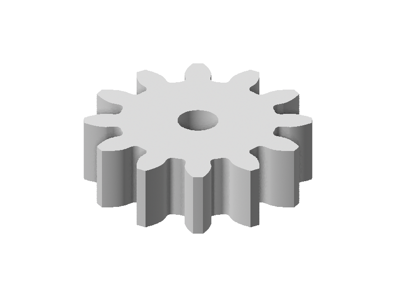
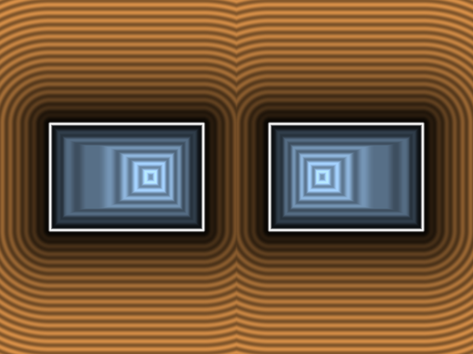

gear-involute
Drafted with AI, not yet reviewed
by Reishapes/gear_involute.scad
Involute spur gear.
The involute of the base circle has a closed-form distance, so involute_gear() draws both flanks as exact curves from the same four numbers, with a fillet at their roots; there is nothing to step through. The four numbers are the design’s; the thickness, the bore and the fillet, ISO’s 0.38 of the module, are this port’s. Its 12 teeth are not undercut, as a gear cut by a rack would be: it meshes with its like, but a rack’s tips would rub its roots. A turn that grows with height makes the teeth helical; this one goes and comes back, a herringbone.


Files
Source
// SPDX-License-Identifier: 0BSD // // Involute spur gear, from an OpenSCAD design that traced its involute // point by point. // // The involute of the base circle has a closed-form distance, so // involute_gear() draws both flanks as exact curves from the same four // numbers, with a fillet at their roots; there is nothing to step through. // The four numbers are the design's; the thickness, the bore and the // fillet, ISO's 0.38 of the module, are this port's. Its 12 teeth are // not undercut, as a gear cut by a rack would be: it meshes with its // like, but a rack's tips would rub its roots. // A turn that grows with height makes the teeth helical; this one goes // and comes back, a herringbone. // --- Parameters --- const M = 2.0; // module, mm const CLEARANCE = 15.0; // dedendum beyond the module, % const TEETH = 12; const PRESSURE = 20.0; // pressure angle, degrees const THICKNESS = 8.0; const BORE = 5.0; // shaft diameter const HELIX = 0.0; // degrees the teeth lean at the pitch circle; 0 for spur teeth const PREVIEW = false; // show the gear's circles // --- Gear --- let options = #{pressure_angle: PRESSURE, clearance: CLEARANCE / 100.0, fillet: 0.38 * M}; let radii = gear_radii(TEETH, M, options); let profile = involute_gear(TEETH, M, options).difference(circle(BORE / 2.0)); let gear = if HELIX == 0.0 { profile.extrude([0.0, THICKNESS]) } else { // A tooth that leans HELIX degrees at the pitch circle turns the // profile by tan(HELIX) / r_pitch radians per mm of height. let turn = THICKNESS * 0.5 * tand(HELIX) / radii.pitch * 180.0 / PI; let twisted = loft([ #{z: 0.0, shape: profile}, #{z: THICKNESS * 0.5, angle: turn}, #{z: THICKNESS, angle: 0.0}, ]); max(twisted, hypot(x, y) - radii.tip) }; bounds([-16, -16, -1], [16, 16, THICKNESS + 1]); resolution(5); draw(gear); // The tip, pitch, base and root circles, as the OpenSCAD design's debug() // shows them. if PREVIEW { let circles = [[radii.tip, 0.8, 0.2, 0.2], [radii.pitch, 0.2, 0.7, 0.3], [radii.base, 0.2, 0.5, 0.2], [radii.root, 0.2, 0.3, 0.8]]; for c in circles { draw_rgb(annulus([c[0] + 0.1, c[0] - 0.1]).extrude([THICKNESS, THICKNESS + 0.4]), c[1], c[2], c[3]); } }